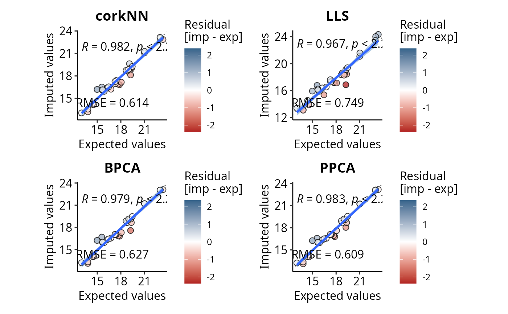

Function that computes the Root Mean Squared Error (RMSE) for all the 4 possible imputation algorithms: missForest, kNN, LLS, SVD. A new dataset containing only proteins with known values is created, a certain percentage of NAs is then manually introduced (with the possibility to respect the "pattern" of the missing values). This percentage is equivalent to the percentage of missing values in the original data set. At the end the imputed values in the new data set are compared with the measured (expected) ones.
# S3 method for class 'imp.methods'
compare(
DEprot.object,
percentage.test = 30,
correlation.method = "pearson",
sample.group.column = NULL,
use.normalized.data = TRUE,
run.missForest = TRUE,
run.kNN = TRUE,
run.tkNN = TRUE,
run.corkNN = TRUE,
run.LLS = TRUE,
run.SVD = TRUE,
run.BPCA = TRUE,
run.PPCA = TRUE,
run.RegImpute = TRUE,
missForest.max.iterations = 100,
missForest.variable.wise.OOBerror = TRUE,
missForest.cores = 1,
missForest.parallel.mode = "variables",
kNN.n.nearest.neighbours = 10,
LLS.k = 2,
pcaMethods.nPCs.to.test = 5,
RegImpute.max.iterations = 10,
RegImpute.fillmethod = "row_mean",
normalize.color.bar = TRUE,
low.residual.color = "firebrick",
zero.residual.color = "white",
high.residual.color = "steelblue4",
seed = NULL,
verbose = FALSE
)A DEprot object, as generated by load.counts or load.counts2.
Numeric value between 0 (excluded) and 100 indicating the percentage of proteins to use for the test dataset. Default: 30.
String indicating the method to use for the correlations. One among: 'pearson', 'spearman'. Default: "pearson".
String indicating the ID of any column of the metadata table. This will be used to introduce the same frequencies of n-missing values for a protein and therefore not introducing the NAs completely at random in the dataset. Default: NULL, NAs are assigned randomly (same percentage of NAs present in the original table).
Logical value indicating whether the imputation should be performed based on the rationalized data. Default: TRUE.
Logical values indicating whether the test for the missForest imputation should be performed. Default: TRUE.
Logical values indicating whether the test for the kNN imputation method should be performed. Default: TRUE.
Logical values indicating whether the test for the tkNN imputation method should be performed. Default: TRUE.
Logical values indicating whether the test for the corkNN imputation method should be performed. Default: TRUE.
Logical values indicating whether the test for the LLS imputation method should be performed. Default: TRUE.
Logical values indicating whether the test for the SVD imputation method should be performed. Default: TRUE.
Logical values indicating whether the test for the BPCA imputation method should be performed. Default: TRUE.
Logical values indicating whether the test for the PPCA imputation method should be performed. Default: TRUE.
Logical values indicating whether the test for the RegImpute imputation method should be performed. Default: TRUE.
Max number of iterations for the missForest algorithm. Default: 100.
Logical value to define whether the OOB error is returned for each variable separately. Default: TRUE.
Number of cores used to run the missForest algorithm. If missForest.cores is 1 (or lower), the imputation will be run in parallel. Two modes are possible and can be defined by the parameter missForest.parallel.mode. Default: 1.
Define the mode to use for the parallelization, ignored when cores is more than 1. One among: 'variables', 'forests'. Default: "variables". See also the documentation of the missForest function.
Numeric value indicating the number of nearest neighbors to use to perform the kNN imputation. Default: 10.
Cluster size, this is the number of similar genes used for regression. Default: 2.
Numeric value indicating the number of Principal Components to test in order to find the optimal number of PCs to used in the imputation methods from the pcaMethods package. This includes: 'LLS', 'SVD' (a.k.a 'svdImpute'), 'BPCA-pcaMethods', and 'PPCA'. Default: 5.
Numeric value indicating the number of maximum iteration for the imputation with RegImpute (from DreamAI). Default: 10.
String identifying the fill method to be used in the RegImpute method (fromDreamAI). One among "row_mean" and "zeros". Default: "row_mean". It throws an warning if "row_median" is used.
Logical value indicating whether the color bar limits for the residuals in the correlation plots should be normalized among the methods. Default: TRUE, the residual color bar absolute maximum is set to the max of all the residuals identified in all the methods,
String indicating any R-supported color that must be used for the negative values of the residuals color bar in the correlation plots. Default: "firebrick".
String indicating any R-supported color that must be used for the null residuals (zero, mid gradient color) color bar in the correlation plots. Default: "white".
String indicating any R-supported color that must be used for the positive values of the residuals color bar in the correlation plots. Default: "steelblue4".
Numeric value indicating the seed to use for the randomization. Default: NULL, automatically generated (saved in the seed slot in the final object).
Logical valued indicating whether processing messages should be printed. Default: FALSE.
A DEprot.RMSE object.
missForest, VIM, pcaMethods R-packages.
comparison <- compare.imp.methods(DEprot.object = DEprot::test.toolbox$dpo.norm,
percentage.test = 100,
sample.group.column = "combined.id",
run.missForest = FALSE,
run.BPCA = TRUE,
run.PPCA = TRUE,
run.kNN = FALSE,
run.tkNN = FALSE,
run.corkNN = TRUE,
run.LLS = TRUE,
run.SVD = FALSE,
run.RegImpute = FALSE)
summary(comparison)
#> imputation.method RMSE correlation.coeff processing.time rank
#> PPCA PPCA 0.6086783 0.9830473 0.57 1
#> corkNN corkNN 0.6144851 0.9824167 0.01 2
#> BPCA BPCA 0.6272062 0.9791381 0.88 3
#> LLS LLS 0.7489155 0.9674068 0.07 4
comparison
